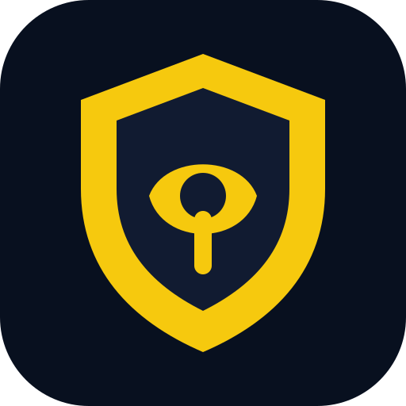

<!doctype html><html lang="pt-BR"><head><meta charset="utf-8"><meta name="viewport" content="width=device-width,initial-scale=1,viewport-fit=cover"><meta name="theme-color" content="#f6c90e"><meta name="description" content="Objeto de aprendizagem gamificado sobre phishing, engenharia social e segurança digital."><link rel="manifest" href="manifest.webmanifest"><link rel="icon" href="icon.svg"><script src="https://cdn.jsdelivr.net/npm/@supabase/supabase-js@2"></script><script src="config.js"></script><title>O golpe tá aí, cai quem quer!</title><style>
:root{--bg:#0b1020;--card:#141c33;--ink:#f5f7ff;--mut:#aab5d1;--acc:#ffd43b;--ok:#3ddc97;--bad:#ff5d73;--line:#293451}*{box-sizing:border-box}body{margin:0;font-family:system-ui,-apple-system,Segoe UI,sans-serif;background:radial-gradient(circle at top,#1c294c,var(--bg) 45%);color:var(--ink);min-height:100vh}main{max-width:820px;margin:auto;padding:22px}.brand{font-weight:900;letter-spacing:.3px}.card{background:rgba(20,28,51,.96);border:1px solid var(--line);border-radius:18px;padding:20px;margin:14px 0;box-shadow:0 12px 35px #0005}.hero{padding:32px 22px;text-align:center}.hero h1{font-size:clamp(2rem,6vw,4rem);margin:.2em 0}.yellow{color:var(--acc)}button,input{font:inherit}button{border:0;border-radius:12px;padding:13px 16px;font-weight:800;cursor:pointer}.primary{background:var(--acc);color:#111827}.secondary{background:#202b49;color:var(--ink);border:1px solid var(--line)}input{width:100%;padding:13px;border-radius:10px;border:1px solid var(--line);background:#0d1428;color:var(--ink);margin:6px 0 12px}.grid{display:grid;grid-template-columns:repeat(2,1fr);gap:12px}.level{min-height:150px}.locked{opacity:.45}.badge{display:inline-block;padding:5px 9px;border-radius:999px;background:#202b49;color:var(--acc);font-size:.85rem;font-weight:800}.top{display:flex;justify-content:space-between;gap:10px;align-items:center}.bar{height:8px;background:#26314d;border-radius:9px;overflow:hidden}.bar i{display:block;height:100%;background:var(--acc)}.opts{display:grid;gap:10px;margin-top:16px}.opt{text-align:left;background:#202b49;color:var(--ink);border:1px solid var(--line)}.opt:hover{border-color:var(--acc)}.feedback.ok{border-left:5px solid var(--ok)}.feedback.bad{border-left:5px solid var(--bad)}.score{font-size:2.5rem;font-weight:900}.small{color:var(--mut);font-size:.92rem}.rank{width:100%;border-collapse:collapse}.rank td,.rank th{padding:9px;border-bottom:1px solid var(--line);text-align:left}.pill{padding:4px 8px;border-radius:99px;background:#26314d}.danger{color:var(--bad)}.good{color:var(--ok)}@media(max-width:620px){.grid{grid-template-columns:1fr}.top{align-items:flex-start;flex-direction:column}}

.nav{display:flex;gap:8px;flex-wrap:wrap}.kpis{display:grid;grid-template-columns:repeat(3,1fr);gap:10px}.kpi{text-align:center;background:#0d1428;border:1px solid var(--line);border-radius:14px;padding:14px}.kpi b{display:block;font-size:1.45rem;color:var(--acc)}.badges{display:flex;gap:8px;flex-wrap:wrap}.medal{border:1px solid #5a4d18;background:#2a2618;padding:9px 11px;border-radius:12px;font-weight:800}.medal.off{filter:grayscale(1);opacity:.35}.scenario{border:1px solid var(--line);border-radius:14px;overflow:hidden;margin:12px 0}.scenario-head{background:#0d1428;padding:9px 12px;color:var(--mut);font-size:.85rem}.scenario-body{padding:15px;background:#f6f7fb;color:#172033}.mail-from{font-size:.85rem;color:#667085}.bubble{max-width:88%;padding:11px 13px;background:#d9fdd3;border-radius:12px 12px 3px 12px;margin-left:auto}.warning{border:1px dashed #6d5b18;background:#2b2718;padding:12px;border-radius:12px}.install{position:fixed;right:16px;bottom:16px;z-index:4;box-shadow:0 8px 25px #0008}.guide-list{display:grid;gap:8px}.guide-list div{background:#0d1428;border:1px solid var(--line);padding:10px;border-radius:10px}.footer{text-align:center;color:var(--mut);font-size:.82rem;padding:24px 0}@media(max-width:620px){.kpis{grid-template-columns:1fr 1fr}.install{left:16px;right:16px}}
</style></head><body><main id="app"></main><script>
const LEVELS=[
{id:'easy',name:'Easy',need:8,badge:'Noob',count:10},
{id:'medium',name:'Medium',need:4,badge:'Script Kiddie',count:5},
{id:'hard',name:'Hard',need:4,badge:'Hacktivist',count:5},
{id:'veryhard',name:'Very Hard',need:8,badge:'Ethical Hacker',count:10}];
const Q={easy:[
['Você recebe: “Seu PIX foi bloqueado. Clique agora neste link para liberar.” O que fazer?',['Clicar rapidamente','Abrir o app oficial do banco sem usar o link','Responder com sua senha'],1,'Urgência e link recebido são sinais clássicos de phishing. Verifique sempre pelo canal oficial.'],
['Uma pessoa conhecida pede por mensagem um código de 6 dígitos que chegou ao seu celular.',['Enviar, se ela souber seu nome','Nunca compartilhar o código e confirmar por outro canal','Postar o código no grupo'],1,'Códigos de autenticação podem permitir o sequestro da conta.'],
['Qual senha é mais resistente?',['12345678','matinhos2026','Uma senha longa e única, preferencialmente gerada por gerenciador'],2,'Comprimento, unicidade e uso de gerenciador reduzem reutilização e adivinhação.'],
['Um perfil recém-criado oferece um prêmio que você não disputou e pede CPF.',['É seguro se tiver logotipo','É suspeito: não fornecer dados e verificar o canal oficial','Enviar apenas metade do CPF'],1,'Prêmio inesperado e coleta de dados são sinais de alerta.'],
['Um QR Code foi colado por cima do QR original de um cartaz.',['Escanear para conferir','Evitar e avisar o responsável pelo local','Escanear em modo anônimo'],1,'QR Codes podem direcionar a páginas maliciosas e adesivos sobrepostos merecem cautela.'],
['Autenticação em dois fatores serve principalmente para:',['Duplicar a senha','Adicionar outra etapa de verificação','Deixar o login mais rápido'],1,'A segunda etapa reduz o risco quando a senha é descoberta.'],
['Você recebe um anexo inesperado chamado “boleto.zip”.',['Abrir para descobrir','Confirmar a origem antes e evitar executar arquivos inesperados','Renomear para .pdf'],1,'Anexos inesperados podem conter malware; renomear não os torna seguros.'],
['Uma notificação dentro do app oficial informa novo login e manda alterar a senha nas configurações.',['Pode ser verificada diretamente no próprio app','Todo aviso é golpe','Enviar a senha ao suporte'],0,'Nem tudo é golpe: o importante é validar pelo canal oficial.'],
['O cadeado/HTTPS em um site significa que:',['O site é necessariamente legítimo','A conexão é criptografada, mas o site ainda pode ser malicioso','O site pertence ao governo'],1,'HTTPS protege a conexão, não garante a honestidade do responsável pelo site.'],
['Ao desconfiar de uma mensagem de um familiar pedindo dinheiro, a melhor ação é:',['Transferir pouco primeiro','Confirmar por outro canal já conhecido','Perguntar o CPF por mensagem'],1,'A confirmação independente quebra a estratégia de engenharia social.']
],medium:[
['Remetente: suporte@banco-seguranca-app.com. O nome do banco aparece no texto. Isso prova autenticidade?',['Sim','Não; é preciso verificar o domínio oficial','Sim, se houver logotipo'],1,'Golpistas podem usar nomes e logotipos; o domínio e o canal oficial importam.'],
['Um site pede login Google em uma janela que imita perfeitamente a tela do Google.',['Digitar, pois o visual prova autenticidade','Verificar domínio/endereço antes de inserir credenciais','Usar a mesma senha para testar'],1,'Interfaces podem ser copiadas. O endereço e o fluxo oficial de autenticação precisam ser verificados.'],
['Você recebe “última chance: conta encerrada em 10 minutos”. Qual técnica aparece?',['Senso de urgência','Criptografia','Backup'],0,'Pressão de tempo reduz a reflexão e é muito usada em engenharia social.'],
['Um app de lanterna pede acesso a contatos, microfone e SMS.',['Permissões parecem excessivas para a função','É normal para qualquer app','Aceitar e revisar daqui a um ano'],0,'Permissões devem ser compatíveis com a finalidade do aplicativo.'],
['Perfil de amigo pede PIX, mas responde corretamente perguntas públicas sobre ele.',['Isso confirma identidade','Ainda é preciso confirmar por canal independente','Transferir metade'],1,'Informações públicas podem ser usadas por golpistas para parecer convincentes.']
],hard:[
['Você recebe um link “https://conta.exemplo.com.seguro-login.net”. Qual é o domínio principal relevante?',['exemplo.com','seguro-login.net','conta.exemplo.com'],1,'Leia domínios da direita para a esquerda: o registrável aqui é seguro-login.net.'],
['Após clicar em link suspeito, você digitou a senha, mas percebeu o erro. Melhor resposta imediata?',['Esperar para ver','Trocar a senha pelo canal oficial, encerrar sessões e revisar 2FA','Apagar o histórico apenas'],1,'A prioridade é invalidar a credencial comprometida e revisar acessos.'],
['Um “suporte” pede que você instale app de acesso remoto para resolver um problema bancário.',['Instalar se a pessoa souber seu nome','Recusar e contatar o suporte oficial','Instalar e depois desinstalar'],1,'Acesso remoto pode entregar controle do dispositivo ao atacante.'],
['Você recebe um QR Code em uma cobrança. A página aberta parece correta. O que ainda deve verificar?',['Nada','Domínio, destinatário/beneficiário e contexto da cobrança','Somente a cor do site'],1,'A aparência pode ser clonada; valide destino e contexto antes de pagar.'],
['Uma senha vazada em um serviço foi reutilizada em outros sites. Qual risco?',['Credential stuffing','Somente spam','Nenhum, se a senha for longa'],0,'Credenciais vazadas são testadas automaticamente em outros serviços.']
],veryhard:[
['Áudio com voz perfeita de familiar pede PIX urgente. A voz prova identidade?',['Sim','Não; confirmar por canal independente','Sim, se usar apelido correto'],1,'Voz pode ser clonada e informações pessoais podem ser conhecidas pelo atacante.'],
['Vídeo ao vivo aparentemente mostra um chefe pedindo transferência incomum.',['Executar imediatamente','Aplicar procedimento de confirmação fora daquele canal','Confiar porque é vídeo'],1,'Deepfakes e contas comprometidas exigem processos de verificação independentes.'],
['Um e-mail vem de endereço correto, mas o pedido é totalmente fora do padrão.',['Endereço correto elimina risco','Conta pode estar comprometida; validar o pedido','Responder com senha'],1,'Comprometimento de conta legítima pode tornar o remetente tecnicamente verdadeiro.'],
['Você recebeu push de 2FA sem tentar login.',['Aprovar para parar notificações','Negar e revisar segurança da conta','Ignorar para sempre'],1,'Múltiplas solicitações podem ser MFA fatigue; não aprove acessos não iniciados.'],
['Um site usa caracteres visualmente parecidos no domínio. Isso é:',['Homógrafo/typosquatting','Backup incremental','Hashing'],0,'Caracteres semelhantes podem enganar a leitura do domínio.'],
['Um atacante conhece escola, amigos e eventos recentes da vítima. Isso torna a mensagem:',['Necessariamente legítima','Potencial spear phishing com dados públicos','Criptografada'],1,'Personalização aumenta credibilidade, mas não comprova identidade.'],
['Você escaneia QR Code e ele abre página que pede permissão para instalar perfil/configuração no celular.',['Aceitar para continuar','Cancelar e verificar a origem','Aceitar se o layout for bonito'],1,'Perfis e configurações podem alterar comportamento do dispositivo; origem precisa ser confiável.'],
['O suporte verdadeiro pede sua senha completa por chat.',['Normal','Conduta suspeita; senhas não devem ser compartilhadas','Seguro se houver protocolo'],1,'Serviços legítimos não precisam conhecer sua senha em texto claro.'],
['Mensagem legítima ou golpe? Há poucos sinais e nenhuma confirmação independente.',['Marcar como legítima','Marcar como golpe com certeza','Reconhecer incerteza e verificar antes de agir'],2,'Segurança também é saber lidar com incerteza sem concluir além das evidências.'],
['Qual princípio é mais adequado para um app educacional sobre privacidade?',['Coletar todos os dados disponíveis','Minimizar dados e coletar apenas o necessário','Guardar senhas em texto aberto'],1,'Minimização de dados reduz exposição e combina a prática do aplicativo com sua mensagem educativa.']
]};
const CFG=window.GOLPE_CONFIG||{};const cloudEnabled=!!(CFG.supabaseUrl&&CFG.supabaseAnonKey&&window.supabase);const sb=cloudEnabled?window.supabase.createClient(CFG.supabaseUrl,CFG.supabaseAnonKey):null;
let db=JSON.parse(localStorage.getItem('golpeDB')||'{"users":{},"ranking":[]}');let user=null,run=null;const app=document.getElementById('app');
async function cloudSession(){if(!cloudEnabled)return null;return (await sb.auth.getSession()).data.session}
async function cloudSync(){if(!cloudEnabled||!user)return;let ses=await cloudSession();if(!ses)return;let u=db.users[user];await sb.from('profiles').upsert({id:ses.user.id,nickname:user,xp:u.xp,unlocked:u.unlocked,badges:u.badges,best:u.best,updated_at:new Date().toISOString()});}
async function cloudLogin(){if(!cloudEnabled)return alert('A nuvem ainda não foi configurada. O modo local continua disponível.');let nickname=prompt('Escolha um apelido público para o ranking:');if(!nickname||nickname.trim().length<2)return;localStorage.setItem('pendingNickname',nickname.trim());let {error}=await sb.auth.signInWithOAuth({provider:'google',options:{redirectTo:location.origin+location.pathname}});if(error)alert(error.message)}
async function restoreCloud(){if(!cloudEnabled)return;let ses=await cloudSession();if(!ses)return;let {data}=await sb.from('profiles').select('*').eq('id',ses.user.id).maybeSingle();let pending=localStorage.getItem('pendingNickname');if(data){user=data.nickname;db.users[user]={pin:'cloud',xp:data.xp||0,unlocked:data.unlocked||0,badges:data.badges||[],best:data.best||{},attempts:{}};save();home()}else if(pending){user=pending;db.users[user]={pin:'cloud',xp:0,unlocked:0,badges:[],best:{},attempts:{}};save();await cloudSync();localStorage.removeItem('pendingNickname');home()}}
async function globalRanking(){if(!cloudEnabled)return ranking();let {data,error}=await sb.from('profiles').select('nickname,xp,badges').order('xp',{ascending:false}).limit(50);if(error)return alert(error.message);let rows=(data||[]).map((r,i)=>`<tr><td>${i+1}º</td><td>${esc(r.nickname)}</td><td>${(r.badges||[]).length}</td><td>${r.xp}</td></tr>`).join('')||'<tr><td colspan="4">Ainda não há resultados.</td></tr>';app.innerHTML=`<div class="card"><h1>Ranking global</h1><p class="small">Resultados sincronizados na nuvem.</p><table class="rank"><thead><tr><th>#</th><th>Jogador</th><th>Badges</th><th>XP</th></tr></thead><tbody>${rows}</tbody></table><br><button class="primary" onclick="${user?'home()':'landing()'}">Voltar</button></div>`}

function save(){localStorage.setItem('golpeDB',JSON.stringify(db))}function esc(s){return String(s).replace(/[&<>]/g,c=>({'&':'&amp;','<':'&lt;','>':'&gt;'}[c]))}
function landing(){app.innerHTML=`<div class="hero card"><div class="brand yellow">OBJETO DE APRENDIZAGEM • BNCC COMPUTAÇÃO</div><h1>O golpe tá aí,<br><span class="yellow">cai quem quer!</span></h1><p>Um treinamento gamificado para reconhecer phishing, engenharia social, golpes com IA e riscos à privacidade.</p><div class="nav" style="justify-content:center"><button class="primary" onclick="login()">Começar no modo local</button><button class="secondary" onclick="cloudLogin()">Entrar com Google</button><button class="secondary" onclick="globalRanking()">Ranking</button><button class="secondary" onclick="about()">Sobre o projeto</button></div></div><div class="grid"><div class="card"><h2>🎯 30 desafios</h2><p class="small">Quatro níveis progressivos, do phishing evidente a situações ambíguas envolvendo IA e identidade.</p></div><div class="card"><h2>🏅 4 badges</h2><p class="small">Noob → Script Kiddie → Hacktivist → Ethical Hacker.</p></div></div><div class="footer">Projeto educacional • Não informe senhas reais ou dados pessoais.</div>`;installButton()}
function login(){app.innerHTML=`<div class="card"><h1>Criar ou entrar no perfil</h1><label>Apelido</label><input id="u" maxlength="20" placeholder="ex.: cyberAna"><label>PIN (4 a 8 caracteres)</label><input id="p" type="password" maxlength="8"><button class="primary" onclick="doLogin()">Continuar</button><p class="small">Não use sua senha real. Este protótipo usa armazenamento local apenas para a demonstração.</p></div>`}
function doLogin(){let n=document.getElementById('u').value.trim(),p=document.getElementById('p').value;if(n.length<2||p.length<4)return alert('Informe apelido e PIN de pelo menos 4 caracteres.');if(db.users[n]&&db.users[n].pin!==p)return alert('PIN incorreto.');if(!db.users[n])db.users[n]={pin:p,xp:0,unlocked:0,badges:[],best:{},attempts:{}};user=n;save();home()}
function home(){let u=db.users[user];app.innerHTML=`<div class="top"><div><div class="brand">${esc(user)}</div><span class="small">Seu painel de treinamento</span></div><div class="nav"><button class="secondary" onclick="guide()">Guia</button><button class="secondary" onclick="landing()">Sair</button></div></div><div class="card"><div class="kpis"><div class="kpi"><b>${u.xp}</b>XP</div><div class="kpi"><b>${u.badges.length}/4</b>Badges</div><div class="kpi"><b>${Math.min(u.unlocked+1,4)}/4</b>Níveis</div></div><h3>Conquistas</h3><div class="badges">${LEVELS.map(l=>`<span class="medal ${u.badges.includes(l.badge)?'':'off'}">🏅 ${l.badge}</span>`).join('')}</div></div><div class="card"><h2>Central de treinamento</h2><p>Para avançar, acerte <b>80%</b>. Entre 50% e 79%, você recebe até duas repescagens. Abaixo de 50%, revise o conteúdo e reinicie a fase.</p></div><div class="grid">${LEVELS.map((l,i)=>`<div class="card level ${i>u.unlocked?'locked':''}"><span class="badge">${l.badge}</span><h2>${l.name}</h2><p>${l.count} desafios • mínimo ${l.need}/${l.count}</p><p class="small">Melhor desempenho: ${u.best[l.id]??'—'}%</p><button class="${i<=u.unlocked?'primary':'secondary'}" ${i>u.unlocked?'disabled':''} onclick="start(${i})">${i<=u.unlocked?'Jogar':'🔒 Bloqueado'}</button></div>`).join('')}</div><div class="nav"><button class="secondary" onclick="globalRanking()">Ranking</button><button class="secondary" onclick="about()">Sobre</button></div>`;installButton()}
function start(li){let qs=Q[LEVELS[li].id].map((q,i)=>({q,i}));run={li,qs,pos:0,correct:0,earned:0};question()}
function question(){let l=LEVELS[run.li],x=run.qs[run.pos].q;app.innerHTML=`<div class="top"><b>${l.name}</b><span>${run.pos+1}/${run.qs.length} • ${run.earned} XP</span></div><div class="bar"><i style="width:${run.pos/run.qs.length*100}%"></i></div><div class="card"><span class="badge">DESAFIO ${run.pos+1}</span><h2>${esc(x[0])}</h2><div class="opts">${x[1].map((o,i)=>`<button class="opt" onclick="answer(${i})">${esc(o)}</button>`).join('')}</div></div>`}
function answer(i){let x=run.qs[run.pos].q,ok=i===x[2];if(ok){run.correct++;run.earned+=100}app.innerHTML+=`<div class="card feedback ${ok?'ok':'bad'}"><h3>${ok?'✓ Decisão segura':'✕ Atenção'}</h3><p>${esc(x[3])}</p><p><b>${ok?'+100 XP':'0 XP'}</b></p><button class="primary" onclick="next()">Continuar</button></div>`;document.querySelectorAll('.opt').forEach(b=>b.disabled=true)}
function next(){run.pos++;run.pos<run.qs.length?question():finish()}
function finish(){let l=LEVELS[run.li],u=db.users[user],pct=Math.round(run.correct/run.qs.length*100);u.best[l.id]=Math.max(u.best[l.id]||0,pct);u.xp+=run.earned;let status='';if(pct>=80){if(!u.badges.includes(l.badge)){u.badges.push(l.badge);u.xp+=250}u.unlocked=Math.max(u.unlocked,Math.min(LEVELS.length-1,run.li+1));status=`Aprovado! Badge <b>${l.badge}</b> conquistada.`}else if(pct>=50){u.attempts[l.id]=(u.attempts[l.id]||0)+1;status=u.attempts[l.id]<=2?`Repescagem disponível: tentativa ${u.attempts[l.id]} de 2.`:'As duas repescagens foram usadas. Reinicie a fase para tentar novamente.'}else status='Game over desta rodada. Revise os feedbacks e tente a fase novamente.';db.ranking=db.ranking.filter(r=>r.name!==user);db.ranking.push({name:user,xp:u.xp,badges:u.badges.length});db.ranking.sort((a,b)=>b.xp-a.xp);save();cloudSync();app.innerHTML=`<div class="card hero"><span class="badge">RESULTADO</span><div class="score ${pct>=80?'good':pct<50?'danger':''}">${pct}%</div><h2>${run.correct} de ${run.qs.length} desafios</h2><p>${status}</p><p>XP da rodada: ${run.earned}${pct>=80?' + 250 de conquista':''}</p><button class="primary" onclick="home()">Voltar às fases</button> <button class="secondary" onclick="ranking()">Ranking</button></div>`}
function ranking(){let rows=db.ranking.length?db.ranking.map((r,i)=>`<tr><td>${i+1}º</td><td>${esc(r.name)}</td><td>${r.badges}</td><td>${r.xp}</td></tr>`).join(''):'<tr><td colspan="4">Ainda não há resultados.</td></tr>';app.innerHTML=`<div class="card"><h1>Ranking local</h1><p class="small">Ranking demonstrativo deste navegador/dispositivo.</p><table class="rank"><thead><tr><th>#</th><th>Jogador</th><th>Badges</th><th>XP</th></tr></thead><tbody>${rows}</tbody></table><br><button class="primary" onclick="${user?'home()':'landing()'}">Voltar</button></div>`}

function about(){app.innerHTML=`<div class="card"><span class="badge">SOBRE</span><h1>Aprender antes de clicar</h1><p><b>O golpe tá aí, cai quem quer!</b> é um objeto de aprendizagem gamificado voltado à segurança e cidadania digital no Ensino Médio.</p><div class="warning"><b>Princípio de privacidade:</b> esta versão demonstrativa não pede nome real, e-mail, CPF nem senha de serviços. Use apenas um apelido e um PIN exclusivo para o jogo.</div><h2>O que você treina</h2><div class="guide-list"><div>🔎 Reconhecimento de phishing e engenharia social</div><div>🔐 Proteção de contas, senhas e autenticação</div><div>📱 Avaliação de links, QR Codes, aplicativos e permissões</div><div>🤖 Verificação diante de clonagem de voz e deepfakes</div><div>🧠 Tomada de decisão quando as evidências são insuficientes</div></div><br><button class="primary" onclick="${user?'home()':'landing()'}">Voltar</button></div>`}
function guide(){app.innerHTML=`<div class="card"><span class="badge">PROTOCOLO</span><h1>Guia de Sobrevivência Digital</h1><p>Dez atitudes para levar do jogo para a vida real.</p><div class="guide-list"><div>1. Pare antes de agir sob pressão ou urgência.</div><div>2. Confirme pedidos incomuns por outro canal já conhecido.</div><div>3. Nunca compartilhe senha, PIN ou código de autenticação.</div><div>4. Abra bancos e serviços pelo app ou endereço oficial.</div><div>5. Leia o domínio com atenção; aparência não prova autenticidade.</div><div>6. Desconfie de QR Codes adulterados ou de origem incerta.</div><div>7. Revise permissões pedidas por aplicativos.</div><div>8. Ative autenticação em duas etapas e negue solicitações que você não iniciou.</div><div>9. Lembre que voz, imagem e vídeo podem ser sintetizados.</div><div>10. Na dúvida, não conclua: verifique antes de agir.</div></div><br><button class="primary" onclick="home()">Voltar ao painel</button> <button class="secondary" onclick="window.print()">Imprimir / PDF</button></div>`}
let deferredPrompt=null;window.addEventListener('beforeinstallprompt',e=>{e.preventDefault();deferredPrompt=e;installButton()});function installButton(){let old=document.getElementById('installApp');if(old)old.remove();if(deferredPrompt){let b=document.createElement('button');b.id='installApp';b.className='primary install';b.textContent='📲 Instalar aplicativo';b.onclick=async()=>{deferredPrompt.prompt();await deferredPrompt.userChoice;deferredPrompt=null;b.remove()};document.body.appendChild(b)}}
if('serviceWorker' in navigator){window.addEventListener('load',()=>navigator.serviceWorker.register('./sw.js').catch(()=>{}))}
landing();restoreCloud();
</script></body></html>